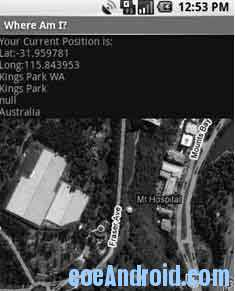

Android 使用地图
对"Where Am I"示例使用地图
在下面的例子中，"Where Am I"项目将再次被扩展。这次，通过把它转换为一个Map Activity，将可以对它添加地图功能。随着设备位置的改变，地图将会自动地把它的中心定位到新的位置。
(1) 首先，向应用程序的清单中加入访问Internet的uses-permission标签。同时还要在application标签中引入Android地图库。
<?xml version="1.0" encoding="utf-8"?><manifest xmlns:android="http://schemas.android.com/apk/res/android
package="com.paad.whereami" >
<application android:icon="@drawable/icon" >
<activity
android:name=".WhereAmI
android:label="@string/app_name" >
<intent-filter>
<action android:name="android.intent.action.MAIN" />
<category android:name="android.intent.category.LAUNCHER" />
</intent-filter>
</activity>
<uses-library android:name="com.google.android.maps" />
</application>
<uses-permission android:name="android.permission.INTERNET" />
<uses-permission android:name="android.permission.ACCESS_FINE_LOCATION" />
</manifest>
(2)改变WhereAmI的继承性，让它继承MapActivity，而不是Activity。还需要包含对isRouteDisplayed方法的重写。因为这个活动不会显示路径的方向，所以你可以返回false。
public class WhereAmI extends MapActivity { @Override
protected boolean isRouteDisplayed() {
return false;
}
[ ... existing Activity code ... ]
}
(3)通过修改main.xml布局资源来包含一个使用完全限定的类名的MapView。一定要保证在com.android.MapView节点中包含一个android:apikey属性。如果有一个Android 地图API key，那么在这里使用它。
<?xml version="1.0" encoding="utf-8"?><LinearLayout xmlns:android="http://schemas.android.com/apk/res/android
android:layout_width="fill_parent
android:layout_height="fill_parent
android:orientation="vertical" >
<TextView
android:id="@+id/myLocationText
android:layout_width="fill_parent
android:layout_height="wrap_content
android:text="@string/hello" />
<com.google.android.maps.MapView
android:id="@+id/myMapView
android:layout_width="fill_parent
android:layout_height="fill_parent
android:apiKey="myMapKey
android:clickable="true
android:enabled="true" />
</LinearLayout>
(4) 现在运行这个应用程序应该显示原始的地理位置文本，它的下面会有一个MapView，如图

(5) 配置Map View，并把对它的MapController的一个引用作为实例变量进行存储。然后设置Map View的显示选项来显示卫星和StreetView，并缩进到比较进的视角。
MapController mapController;@Override
public void onCreate(Bundle icicle) {
super.onCreate(icicle);
setContentView(R.layout.main);
// 获得对MapView的引用
MapView myMapView = (MapView) findViewById(R.id.myMapView);
// 获得MapView的控制器
mapController = myMapView.getController();
// 配置地图显示选项
myMapView.setSatellite(true);
myMapView.setStreetView(true);
myMapView.displayZoomControls(false);
// 放大
mapController.setZoom(17);
LocationManager locationManager;
String context = Context.LOCATION_SERVICE;
locationManager = (LocationManager) getSystemService(context);
Criteria criteria = new Criteria();
criteria.setAccuracy(Criteria.ACCURACY_FINE);
criteria.setAltitudeRequired(false);
criteria.setBearingRequired(false);
criteria.setCostAllowed(true);
criteria.setPowerRequirement(Criteria.POWER_LOW);
String provider = locationManager.getBestProvider(criteria, true);
Location location = locationManager.getLastKnownLocation(provider);
updateWithNewLocation(location);
locationManager.requestLocationUpdates(provider, 2000, 10,
locationListener);
}
(6) 最后一步是修改updateWithNewLocation方法从而使用Map Controller把地图的中心定位到当前的位置。
private void updateWithNewLocation(Location location) { String latLongString;
TextView myLocationText;
myLocationText = (TextView)? ndViewById(R.id.myLocationText);
String addressString = "No address found";
if (location != null) {
// 更新地图位置
Double geoLat = location.getLatitude()*1E6;
Double geoLng = location.getLongitude()*1E6;
GeoPoint point = new GeoPoint(geoLat.intValue(), geoLng.intValue());
mapController.animateTo(point);
double lat = location.getLatitude();
double lng = location.getLongitude();
latLongString = "Lat:" + lat + "\nLong:" + lng;
double latitude = location.getLatitude();
double longitude = location.getLongitude();
Geocoder gc = new Geocoder(this, Locale.getDefault());
try {
List<Address> addresses = gc.getFromLocation(latitude, longitude, 1);
StringBuilder sb = new StringBuilder();
if (addresses.size() > 0) {
Address address = addresses.get(0);
for (int i = 0; i < address.getMaxAddressLineIndex(); i++) sb.append(address.getAddressLine(i)).append("\n");
sb.append(address.getLocality()).append("\n");
sb.append(address.getPostalCode()).append("\n");
sb.append(address.getCountryName());
}
addressString = sb.toString();
} catch (IOException e) {}
} else {
latLongString = "No location found";
}
myLocationText.setText("Your Current Position is:\n" + latLongString + "\n" + addressString);
}